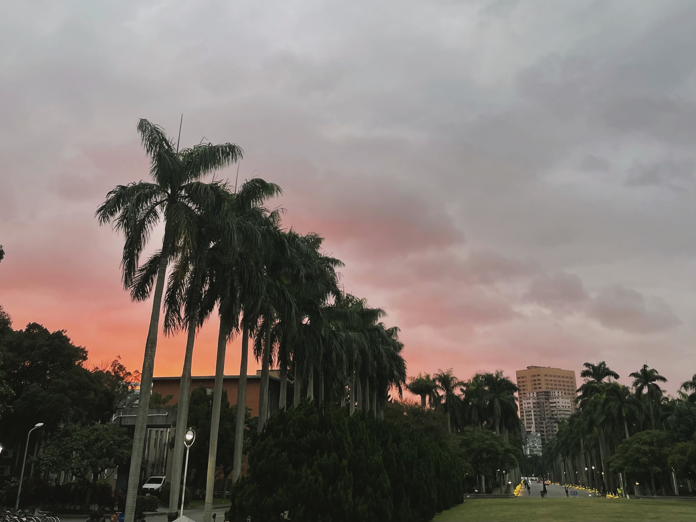

近期得知有些朋友有在看我的紀錄，真是受寵若驚，你們的回覆很讓我感動，也期許自己的文筆可以日漸提升。
先說說為什麼想寫這個
掙扎、猶豫反覆再三，是否該試著寫出這篇文章。我認為我自己很容易感染他人的心情。不論是透過閱讀或是現實生活中，我很容易感染到一件別人由衷開心的事（或是難過）。這也是為什麼我對這個話題時常思想、放在心中。因此，希望可以透過分享一些想法與心得，希望能幫到一些些人。
由於我非就讀專業科系，吸收的知識也非常有限；我也非心理疾病患者，著實無法真實體會他們的處境。但我想推廣、整理一些資源，應該還是可以的吧。我最不樂見的就是傷害到任何人、誤導大家，如果有不舒服或錯誤請讓我知道，我一定會修改或刪除文章。真的很感謝李萱提供許多資源、鼓勵！順帶一提，信仰是我面對這類問題時很自然內化的一部分，後文可能會稍有提及，如果讓你感到不舒服，可以關掉這篇文章，當然如果你覺得有值得討論的也歡！與我聊聊。

聊聊壓力
嗯…，不知道大家是否對這類話題有些感受，如果去年以前就來到台大的，想必還記得上學期一連串的悲劇、校園也籠罩在一種不安的氛圍。推薦一篇報導者的文章，建議大家可以好好讀完，可以更了解到底「我們」出了什麼問題。不知道大家剛踏入校園是否感受到這個校園每個人好像充滿活力，卻好像找不到自己的歸屬，也不太知道我們要如何、變成理想中自己期待的樣子。底下是我自己印象非常深刻的話（真的忘記是誰說的了QQ）
每個人都騎著腳踏車飛速穿越椰林大道，好像非常堅定的朝著目的地前行。我卻迷失在這片美景之中。
‧ 同理壓力
這是多令人難過的事啊，我們拼進全力擠過考試這個窄門（其實每個學校都是，我們脫離了升學主義後），卻在更廣大的天空中不確定該踏向何方。課業、外務、社團、人際，各式各樣的壓力排山倒海般的席捲我們。我剛來我的科系時真的超級不適應的。除了每個人都身懷絕技，我有種也變得更強的「壓力」外。我無法理解為何許多人都像軍備競賽般堆積自己的履歷，參加商競、修很難的課、實習…等。即便大家都在抱怨自己多累、壓力多大或快要死掉，卻依然堅持而不願放棄。我曾天真的認為：「為什麼我們不要一起喊3..2..1，大家一起拋棄這些重擔呢？這樣不就可以追求真正喜歡做的事、培養一些興趣之類的不好嗎？」
我後來知道這不單發生在經管類上，其他的科系有的要拼好的專業、推上研究所、專題的教授…等。就如同剛剛的文章所說，現在我們的生活變成一種追求「多元卓越」的情況。也是最近受朋友的提醒，我才發覺也不知不覺間似乎也變成這樣的人了。這時的我才逐漸理解「啊…原來他人和我一樣，即便很累，我想我們都還是有一個內心的想法是希望可以試著追上別人，或者再多說一步：希望可以贏別人一點點吧！」再更深一層的原因或許是來自於面對未來不論研究所、職場上那份極大的不安迫使我們試著將時間的風險偏好前移，即便要付出相應的溢價（現在累一點點），但至少能做出什麼來消彌這份擔憂與恐懼。（結果我整段是這裡最不確定是不是可以這樣用，但我腦中是有一個時間對應壓力的風險偏好xy軸啦，不知道對不對）
上述是我自己目前給出能說服我自己的理由，透過這樣的頗析，我可以更好地同理自己與別人的壓力來源。當然，再次強調，上述無法代表所有人的想法與情況。那如果你能認同我上述的想法，真是太棒了，我可以做出一個小結論是：若知道我們壓力的來源，而這個來源是正常的、也不是我們目前可解決的，那或許我們可以以更健康的心態去面對，
‧ 面對自己的壓力
接下來提供一些我覺得有用的辦法，是比較務實面的。比較感性或抒發會放在下段心理健康中。我打的也有點心虛，我認為有更厲害、有說服力的人可以寫出來，我就獻醜了。這段的前提是建立在我們已經知道無法逃避這些困難的課業、繁忙的外務時，那接下來我們要如何面對自己的壓力。
關於事：好的時間管理或許是最有效的。好好分配時間、記好重要的考試、作業、社團（大推薦schooly這個app）、積極地尋求幫助與討論也可以減少一些自己奮鬥的時間、心態轉換成試著去學習知識而非在意成績或結果。
關於人：看到時就紀錄要做的事、約吃飯（如果有養成這個習慣，真的會讓你少很多尷尬回說：抱歉我忘記了的窘境QQ）。肯定自己（找到樂衷的事）或許也可以在面對人群中較有自信、不要做會讓人不舒服的舉動等等。慢慢找到自己適合、舒服的關係、團體中，可能是一起運動的球隊、有共同興趣的團體，我猜也會慢慢減少相對應的壓力吧。
關於心態：面對龐大壓力（就是那種會讓你自己感覺會影響超多未來的事）前的焦慮，我個人的辦法是明確告訴自己「不論我是否準備足夠，這件事一定會過去，而這件大事的結果絕對不會否定我的價值，我也一定能學習到某些經歷。」或許這不會減低自己的焦慮，但還是可以好過一些吧。
‧ 面對他人的壓力
接下來想說的是，當我們能面對自己的壓力時，要怎麼去理解他人壓力，或是不要去傷害別人吧。
盡量不要瞧不起人：這我自己真的超級容易犯的，對於外團體我們真的時常有許多同質偏差的想法。為了自己和他人好，我覺得這真的是很需要訓練的能力。每個人都不一樣啊，戰系、比成績、經歷，各式各樣的冷嘲熱諷等等，我覺得都超沒有意義的，我們從來都不知道看不起的人在我不知道的領域有多厲害、他的夢想有多值得敬佩。如果校園中這樣的人可以越來越少，對處在一樣水深火熱的他人來說，會是很感動的一件事。
壓力\痛苦是無法比較的：這跟上面的也有些相關，但如果我們都可以同理壓力，那去比較別人的壓力是沒什麼意義的吧。比如說：「你這堂課也還好吧！我的才…」、「阿你們系應該不用怎樣啊，我們才…」、「喔你實習是不是很涼啊，感覺不難耶…」。我認同互相傾訴壓力的重要，但我也知道其實我們很難真的理解別人的壓力或困境，如果又再加上自己壓力也很大的情況。我們可以試著包容、彼此加油打氣，但也要體認到不該要求對方一定能理解我們自身的處境。
我自己也發現變成大二再去看一些大一的課程、考試，的確會覺得好像沒什麼。但我也很記得那時候的痛苦與水深火熱。我自己覺得人生這條路很像打怪，即便你等級變高，但遇到的怪物也變強了，所以我猜大部分的人其實在各階段面對到的壓力是一樣的吧。
聊聊心理健康
這段我沒有更多的觀點，只是希望推廣一些文章、影片讓大家知道，也算我自己的庫存，需要時可以來找找或補充。也是到執筆時才意外發現，這些知識好像都是在上大學後才得知的。過去健康教育反而著重於性教育、飲食、毒品防制上，對心理健康反而較少關注QQ。
‧ 同理心理疾患
心理疾患太多太多了，其實有時候急於去分類這樣的情況是XX症也無事於補。但對於非患者我們可以試著廣泛了解、找到一個普遍性的態度。分享一個小短文，快速簡單的認識一些心理疾病，裡面的短片也值得一看。我想，如果能多了解這些疾病也比較有機會了解下面的討論。
‧ 面對自己的心理狀況
我自己得到的資訊是自我覺察蠻有幫助的，有的像是心理上的健康檢查。原本也曾覺得這哪能有什麼用，但後來有定時測驗時，我覺得的確有幫助到我觀察自己的情況與壓力。這樣也可以在壓力大時，記得提醒自己去運動、或讓自己吃個甜點、好吃的之類的。我平常都是用這個，一個叫「小鬱亂入」的網站，他算比較快速與短的測驗，網路上也還有很多類似的網站，大家可以找自己喜歡的。我很喜歡他的插畫、文字，它同時也還有許多關於憂鬱症的資訊，真的超棒的。
‧ 面對他人的心理狀況
我想很多人願意點進來可能都是希望能看到這個。但我自己也沒啥好方法，就試著多理解、多傾聽、多陪伴吧。我在打前面的文章時，其實整個情緒是刻意放很低的。我覺得在這種過程中，也更能接近去體會一些想法與感受。我也理解其實每個人的壓力也很大、時間也忙碌。能願意當陪伴者很不容易，或許不去惡意傷害是大家能做到的事。「雖然有的時候很期待自己的存在能夠為他們帶來一些的改變，可是事實上我們都是有限的人，我們一樣會有受傷、後悔、愧疚、失落、生病的可能。然而我相信我們也有所謂的“韌性”，這一種能夠重新振作的力量會幫助我們一起慢慢地恢復的！」by 李萱（文筆好美，一看就不是我寫的出來的）也一樣提供一些連結：
‧ 一些我不知道的事
我覺得台灣真的越來越好，至少這件事並不再是被隱藏的話題，越來越多人願意分享自己的經驗、讓別人知道自己的情況。推薦大家看志祺七七、理科太太都有做一些相關的影片。另外，還有一本書我很想看的叫「成為一個新人」。
- 吃藥會怎樣
- 志祺的一系列（之後我也要來補！）
- 成為一個新人：我們與精神疾病的距離
- 維思維（李萱說跟她上課的內容差別不大，是正確性蠻高的youtube頻道）
- 浴室牆上的字，前面沒興趣的話來看個電影吧！也是李萱推薦的～
很謝謝願意看到這裡的人，希望大家也能更重視在校園間的壓力與自己、他人的心理狀況。或許有招一日，我們可以透過更好的學期調整制度、院學輔員，到慢慢改變同儕、教師的心態來慢慢影響這個校園（我很不認同要操才會有競爭力、要把人當掉學生才會唸書的想法）。讓每個騎在椰林大道的你我，不用在意他人往何處去，找到自己舒服的模式來面對壓力與成為自己想成為的人。（其他學校也是啦，只是這樣寫比較有意境XD）
寫在最後
我想了很久這篇文章要不要談信仰，我想既然信仰是我面對這類問題最真實的回應，那記錄下來倒也無妨。但要先強調我絕不會說信仰是萬靈丹。相反地，關於信仰、傳教的流言蜚語我好像沒有少聽過，也的確有些打擊。再說，許多基督徒也正經歷或遭遇過心理疾患的苦痛。絕對沒有相信基督教就都會開開心心地這種鬼話。
但說起來到也奇妙，這個信仰卻依舊陪伴著我。不知道大家在看剛剛的文字或生活中是否很常認為沒有任何人能體會你現在的壓力、痛苦，或面臨到多危及的情況。對我而言，這個「人」存在，也一直陪伴在我身旁。當我意識到我開心時祂與我一同慶祝、難過時會傾訴我的哀求、陪我一同哭泣。那即便這份壓力依舊存在、事情依舊嚴重，但這個過程重擔好像就有人一同分擔，而分擔的程度則取決於對祂的信賴吧。剛剛面對壓力的自我喊話其實也來自於我平時的禱詞：「不論我是否準備足夠，我相信這件事一定會在祢的掌握之中，而我願意將結果交託給祢，我深知道這件事的結果絕對不會否定祢看我的價值，我願與祢一起同行、經歷祢在這件事上要成就的一切。」
最近晨更時讀到一節我默想了很久很久的經文來分享給大家～
我們在一切患難中，他就安慰我們，叫我們能用神所賜的安慰去安慰那遭各樣患難的人。哥林多後書 1:4
who comforteth us in all our affliction, that we may be able to comfort them that are in any affliction, through the comfort wherewith we ourselves are comforted of God.(2 Corinthians 1:4 ERV)
我想應該有些人 「恕無法苟同」，但如果你有任何想法也歡迎找我聊聊，或許你可以幫助我釐清一些我自己無法看到的問題。
最後的最後，送大家兩首很溫暖、我很喜歡的歌！